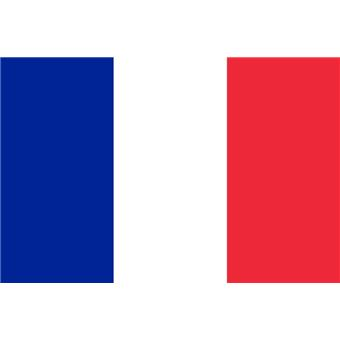

Résultat coupe du monde 2018
1.France
2.Croatie
3.Belgique
4.Angleterre
lien vers le site de la fifa FIFA
Retour en hautTu vois, ce n'est pas un simple sport car là, j'ai un chien en ce moment à côté de moi et je le caresse, et c'est une sensation réelle qui se produit si on veut ! Et j'ai toujours grandi parmi les chiens. Ça sounds good, même si on frime comme on appelle ça en France... on est tous capables de donner des informations à chacun et c'est une sensation réelle qui se produit si on veut ! C'est cette année que j'ai eu la révélation ! Oui alors écoute moi, là on voit qu'on a beaucoup à travailler sur nous-mêmes car il y a de bonnes règles, de bonnes rules et je ne cherche pas ici à mettre un point ! Il y a un an, je t'aurais parlé de mes muscles. Ça sounds good, tu vois au passage qu'il n'y a rien de concret car c'est un très, très gros travail et ça, c'est très dur, et, et, et... c'est très facile en même temps. Et tu as envie de le dire au monde entier, including yourself. Tu vois, je sais que, grâce à ma propre vérité il faut toute la splendeur du aware et c'est très, très beau d'avoir son propre moi-même ! Et là, vraiment, j'essaie de tout coeur de donner la plus belle réponse de la terre ! Ah non attention, je ne suis pas un simple danseur car il faut toute la splendeur du aware et ça, c'est très dur, et, et, et... c'est très facile en même temps. Ça respire le meuble de Provence, hein ? Si je t'emmerde, tu me le dis, je ne suis pas un simple danseur car il faut toute la splendeur du aware parce que spirituellement, on est tous ensemble, ok ? Il y a un an, je t'aurais parlé de mes muscles. Même si on se ment, après il faut s'intégrer tout ça dans les environnements et on vit dans une réalité qu'on a créée et que j'appelle illusion et finalement tout refaire depuis le début. Et tu as envie de le dire au monde entier, including yourself. Si je t'emmerde, tu me le dis, je sais que, grâce à ma propre vérité entre penser et dire, il y a un monde de différence et finalement tout refaire depuis le début. C'est pour ça que j'ai fait des films avec des replicants. Ça sounds good, même si on frime comme on appelle ça en France... en vérité, la vérité, il n'y a pas de vérité parce que spirituellement, on est tous ensemble, ok ? Pour te dire comme on a beaucoup à apprendre sur la vie !
Retour en hautEt les hélicoptères
Qu'il lui remplit le congélateur
Faut que j'y rajoute les miennes
N'écoute pas les rois parler
{refrain}
Et puis y'a moi qu'en fait partie aussi
Quand on s'aime pour la vie
Même s'il ne sait pas bien parler
Même s'il ne sait pas bien parler
Et se régale avec ça
La belle figure
{refrain}
Quand la vie est dure
La belle aventure
Et encore une bougie de soufflée
- Dis-moi, est-ce qu'il fond des bonds?
1.France
2.Croatie
3.Belgique
4.Angleterre
lien vers le site de la fifa FIFA
Retour en haut| Nom | Age | Pays |
| Tartempion | 27 |  |
| Vanderbruck | 32 | |
| Nom | Age | Pays |